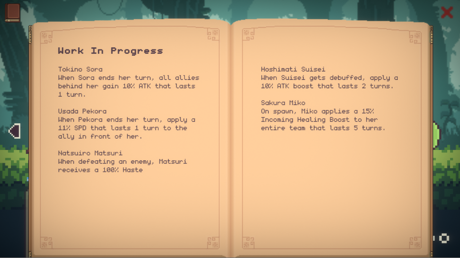

into the holoverse 2 is a prototype of into the holoverse's revamped combat system hololive. developed in 2023.
this combat prototype was developed based on the feedback and rigorous testing of the first game. mainly i'll explain my personal thoughts on what this prototype improved over the original idea.
The initial game-changing update involved a significant alteration to the action points system. The cap was lowered from 10 to 5, and skill costs were reconfigured to be either 0 (for basic attacks) or 1 for any other skill. In the first version of ITH, players tended to stockpile APs to unleash high-cost skills of 7 or more, often neglecting medium-cost skills altogether. In essence, they relied heavily on the initial 0/1 cost skill until their primary DPS character executed a 7~10 cost skill. This created a suboptimal design scenario where other skills were overlooked, and teams were structured to exploit the availability of free skills.
By revamping the skills to consistently cost 1 AP (excluding basic attacks), players are now incentivized to utilize their AP pool more effectively, encouraging them to employ the skills of all characters in their team. This adjustment has significantly enhanced the influence of support-oriented characters.
The second most significant alteration entails the abandonment of the rotational combat system. Instead, units are now arranged horizontally, facing off against each other. In the previous rotational setup, players strategically positioned units for favorable matchups and efficient skill targeting. However, when an enemy unit was eliminated, the rotation transitioned from 4 characters per round to 3, disrupting the established matchups and shifting the battle from strategic to chaotic. In the updated format, characters have the ability to swap positions prior to executing their skills, adding a substantial layer of strategy.
In tandem with the positional changes, the mechanics of skill targeting have undergone a comprehensive revamp. A new facet of skill targeting is range, which dictates how far a skill can reach. A range of 1 implies a unit directly in front of the caster, while a range of 5 spans five units' distance. The interplay of range and positional swapping grants players a deeper well of strategic options.
Another alteration to the combat system involves the adjustment of turn order. Previously, the sequence of turns was contingent on the rotation of characters, with a few exceptions where certain skills could impede rotation. In the updated format, a speed attribute is introduced, influencing how swiftly characters can take action. This inclusion of speed and a dynamic turn order facilitates the creation of a broader range of skills and fosters enhanced character synergy.
Ultimates are a new addition to ITH. Characters can build up energy to unleash powerful skills regardless of their turn order. Diferent ultimates have different effects and energy costs. Some ultimates, such as a well timed team shield, could single handedly turn the tables in an unfavorable match.
Elemental weakness was also reworked for ITH 2. Instead of relying on the traditional rock paper scissor like elemental advantages, enemies were given multiple weaknesses. This allows the creation of more dynamic teams rather than finding meta units for each element.